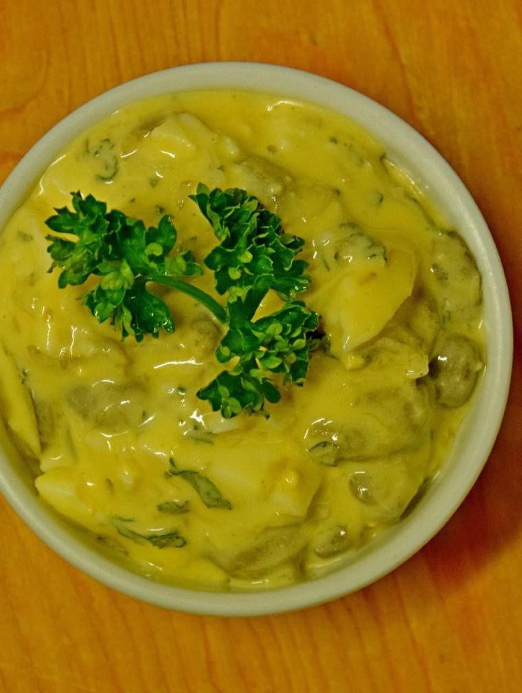

Sauces

Sauces
Sauce gribiche
La sauce de la tête de veau
Préparation : 15 min
Repos : 1 h
Cuisson : 10 min
Ingrédients (pour 4 personnes)
- 4 œufs
- 100 g de cornichons
- 20 cl d’huile de pépins de raisin
- 1 cuillère à soupe de moutarde
- 1 cuillère à soupe de vinaigre
- un bouquet de persil plat, un de cerfeuil
- sel, poivre
Quantités adaptées. Les temps de cuisson ne sont pas recalculés.
- Cuire les œufs durs 10 minutes, les refroidir.
- Écraser les jaunes avec moutarde, vinaigre, sel et poivre.
- Incorporer l’huile peu à peu, comme une mayonnaise.
- Hacher blancs, cornichons et herbes, les lier à la sauce. Laisser reposer 1 heure au froid.
À conserver au froid, jamais au placard
Au réfrigérateur entre 0 et 4 °C : 24 heures au plus. Ne pas congeler. À base d’œufs durs : elle se garde aussi peu qu’une mayonnaise.
D’après la recette d’Alexandre Tessier, Gault et Millau. Texte reformulé.